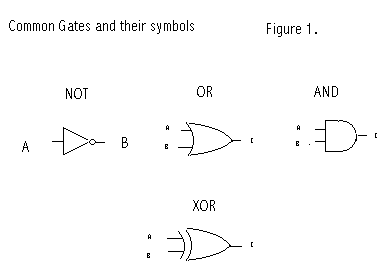
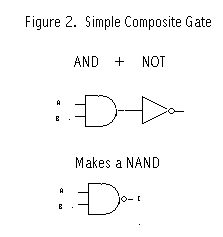
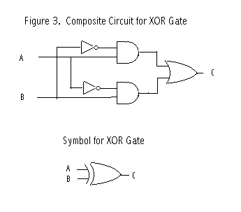
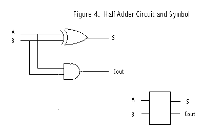
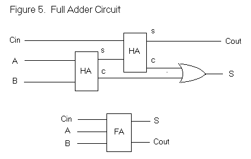
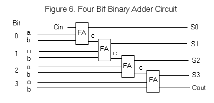

There are several motivations for simulating logic circuits in Python. First it is a nice simulation exercise. Second it shows off object oriented programming well, especially the power of inheritance. Finally real logic circuits built with electronic components are the basis for computer hardware. The simplest are gates (AND, OR, NOT) made with only a few transistors and resisters. Since the mid 1960's these circuits have been fabricated in integrated circuits (chips). Before that they were built with seperate transistors and resisters wired together on circuit boards. Today you can purchase chips with, say, six NOT gates or four 2 input NAND gates (an AND gate followed by a NOT) for as little as a quarter at your local electronics retailer.
We will use a couple of Python classes to simulate the behavior of logic circuits. We will have a base class LC (logic circuit) which will be subclassed to actual gates and other circuits. A second class, Connector, will be used to provide inputs and outputs to the logic circuits. An output connectors connect method will simulate the wiring of LC's to one another.
Click Here for Full Python Source
We will start with 3 simple LC's and proceed to build everything else from them. When we are done with this part we will have a LC that adds two binary numbers together. In the next part we will see how the same simple LC's can be used to provide computer memory and even multiplication of binary numbers.
Our 3 basic LC's are the two input AND and OR gates and the NOT gate (sometimes called an inverter).
The AND gate has two inputs (generally labeled A and B) and and output C. The inputs and output may have the value 0 or 1. The output C is 1 if and only if both A and B are 1. Otherwise it is 0. (see fig. 1)

The OR gate is very similar with the same inputs A and B, and output C. The output C is 1 if either A or B is 1, Otherwise it is 0.
The NOT gate has a single input A and output B. The output is the opposite of the input. If the input is 0, the output is 1. If the input is 1, the output is 0.
From these basic 3 LC's (or gates), everything else is built by using existing LC's and connecting outputs to inputs in certain ways. For example to make a NAND gate where the output C is 0 if and only if both inputs are 1, we can use and AND gate followed by a NOT gate. The inputs of the AND gate are the inputs to the NAND. The AND output is connected to the NOT input. The NOT output is the output for the NAND. See figure 2.

A more interesting LC (see figure 3) is the XOR gate. It is built with 2 NOT's, 2 AND's and an OR gate. Its output C is 1 if the inputs A and B are not the same. We can see how this works looking at the figure. The LC output is the OR gate output and will be 1 if either of the AND gate outputs are 1. The top AND gate output is 1 if input A is 1 and B is 0. The lower AND gate output is 1 if A is 0 and B is 1. If A and B are the same, both AND gate outputs are 0. You should convince yourself of this in more detail.

Lets look at our Python classes now. The class Connector will provide inputs and outputs for instances of the LC class (and subclasses). Each Connector will belong to an owner and have a name. By convention the name is a string that reflects the variable name we choose for the connector. This will let us monitor outputs during execution. Every connector has a current value, either 0 or 1. This will change as the program executes.
An output connector will normally be connected to one or more input connectors unless it is a final output, in which case it will probably be monitored. Input connectors will have their "activates" attribute true, so that when their value is changed they wake up their owner (an LC) to reevaluate its output(s).
So this is the code to initialize a Connector instance
class Connector : def __init__ (self, owner, name, activates=0, monitor=0) : self.value = None self.owner = owner self.name = name self.monitor = monitor self.connects = [] self.activates= activates
For output connectors we will call the connect method to provide the output with a list of its input connectors. For convenience, a single input does not have to be placed in a list.
def connect (self, inputs) : if type(inputs) != type([]) : inputs = [inputs] for input in inputs : self.connects.append(input)
The set method will be called from different places depending on whether we have an input or output connector. Outputs will be set by their owners evaluation functions. Outputs will in turn set their inputs. As an input is set, it triggers its owners evaluation, cascading the logic activity. If a connector is being monitored (self.monitor==1) it prints the owners name, its own name and the value it is being set to.
def set (self, value) : if self.value == value : return # Ignore if no change self.value = value if self.activates : self.owner.evaluate() if self.monitor : print "Connector %s-%s set to %d" % (self.owner.name,self.name,self.value) for con in self.connects : con.set(value)
Logic circuits will be simulated in the LC class and its subclasses. There are two types of logic circuits, simple and composite. Simple logic circuits have inputs, outputs, and an evaluate method. Composite circuits have inputs, outputs, and a collection of internal LC's and connector objects "wired" together. Each input of a composite LC will be connected to an input of an internal LC. Likewise each output of the composited LC will come from an output of an internal LC. For Composite LC's the evaluation function is unused.
Our base class LC is a virtual class. That is, we won't build instances (objects) from it directly. It will be subclassed to more useful purposes. It provides the logic to give an LC a name and a default evaluation function.
class LC : def __init__ (self, name) : self.name = name def evaluate (self) : return
Our first real LC is a NOT gate or inverter. It calls its superclass, sets up an input connector A, an output connector B, and an evaluation method. The evaluation method sets B to 1 if A is zero, or B to 0 if A is 1. A Not LC is a example of a simple LC.
class Not (LC) : # Inverter. Input A. Output B. def __init__ (self, name) : LC.__init__ (self, name) self.A = Connector(self,'A',activates=1) self.B = Connector(self,'B') def evaluate (self) : self.B.set(not self.A.value)
Next we will define classes for our other two simple LC's, the AND and OR gates. First lets define a convenience class for two input gates in general that have inputs named A and B and an output C.
class Gate2 (LC) : # two input gates. Inputs A, B. Output C. def __init__ (self, name) : LC.__init__ (self, name) self.A = Connector(self,'A',activates=1) self.B = Connector(self,'B',activates=1) self.C = Connector(self,'C')
With that out of the way we just have to add evaluation functions to make the AND or OR classes.
class And (Gate2) : # two input AND Gate def __init__ (self, name) : Gate2.__init__ (self, name) def evaluate (self) : self.C.set(self.A.value and self.B.value) class Or (Gate2) : # two input OR gate. def __init__ (self, name) : Gate2.__init__ (self, name) def evaluate (self) : self.C.set(self.A.value or self.B.value)
Let's play with this a bit. We'll instantiate an AND gate, set its output for monitoring and then set its input connectors both to 1.
>>> from logic import *
>>> a = And('A1')
>>> a.C.monitor=1
>>> a.A.set(1)
>>> a.B.set(1)
Connector A1-C set to 1
Next we will instantiate an inverter (NOT gate) and connect it to the output of the AND gate. See figure 2. Then we'll change one the inputs.
>>> n = Not('N1')
>>> a.C.connect(n.A)
>>> n.B.monitor=1
>>> a.B.set(0)
Connector A1-C set to 0
Connector N1-B set to 1
>>>
Now we will build a class for a composite LC, the XOR gate. See figure 3. When an instance of an Xor is built, we grab 2 AND gates, 2 Inverters, and an OR gate and wire them up as shown in the figure. Notice in particular how we connect the external input (self.A) to an input of an internal gate (self.A1.A)
class Xor (Gate2) : def __init__ (self, name) : Gate2.__init__ (self, name) self.A1 = And("A1") # See circuit drawing to follow connections self.A2 = And("A2") self.I1 = Not("I1") self.I2 = Not("I2") self.O1 = Or ("O1") self.A.connect ([ self.A1.A, self.I2.A]) self.B.connect ([ self.I1.A, self.A2.A]) self.I1.B.connect ([ self.A1.B ]) self.I2.B.connect ([ self.A2.B ]) self.A1.C.connect ([ self.O1.A ]) self.A2.C.connect ([ self.O1.B ]) self.O1.C.connect ([ self.C ])
So let's play with an XOR gate for a minute. Remember the output should be 1 if the inputs are different.
>>> o1 = Xor('o1')
>>> o1.C.monitor=1
>>> o1.A.set(0)
>>> o1.B.set(0)
Connector o1-C set to 0
>>> o1.B.set(1)
Connector o1-C set to 1
>>> o1.A.set(1)
Connector o1-C set to 0
>>>
Now, finally, we are ready to talk about addition. So let's start with something familiar. Suppose we want to add 168 and 234. Hmm. 8 plus 4 is 2 and carry 1. 1 plus 6 plus 3 is 0 and carry a 1. Finally 1 plus 1 plus 2 is 4. Answer 402.
So when we were all 7 years old we memorized 100 (10 times 10) rules of addition like 8+4=12 (or 2 and carry 1). Of course if you get tricky and remember that 8+4 is the same as 4+8 and that zero plus anything is just that anything, you can reduce the amount of memorization to 45 items.
In binary it is so much simpler. 4 rules (2 times 2) instead of 100. If you are tricky, just 1. Basically that 1+1=2 (well 10, that is 0 and carry 1). Now to represent a number in binary requires about 3.5 times as many digits as decimal but you can start to see that this may be a good tradeoff.
Actually so far we're just talking about the first (rightmost) column. There is no carry in yet. But bear with me for a moment. Lets summarize the 4 rules of binary addition
0 + 0 = 0 0 + 1 = 1 1 + 0 = 1 1 + 1 = 0 and carry a 1
We will build a half adder circuit with 2 inputs and 2 outputs. See figure 4. The Sum output is the same as the XOR gate above. That is the sum bit is one if one and only one of the input bits is 1. The carry out is 1 only if both inputs are 1. For that we need an AND gate.

class HalfAdder (LC) : # One bit adder, A,B in. Sum and Carry out def __init__ (self, name) : LC.__init__ (self, name) self.A = Connector(self,'A',1) self.B = Connector(self,'B',1) self.S = Connector(self,'S') self.C = Connector(self,'C') self.X1= Xor("X1") self.A1= And("A1") self.A.connect ([ self.X1.A, self.A1.A]) self.B.connect ([ self.X1.B, self.A1.B]) self.X1.C.connect ([ self.S]) self.A1.C.connect ([ self.C])
Let's build a half adder, monitor its outputs as we play with the inputs
>>> h1 = HalfAdder("H1")
>>> h1.S.monitor=1
>>> h1.C.monitor=1
>>> h1.A.set(0)
Connector H1-C set to 0
>>> h1.B.set(0)
Connector H1-S set to 0
>>> h1.B.set(1)
Connector H1-S set to 1
>>> h1.A.set(1)
Connector H1-S set to 0
Connector H1-C set to 1
>>>
Now we're ready for the coup de grace. Let's go back to decimal for just a moment. Suppose we are adding the following.
189 243
and we are working on the middle column. We'll have a carry in of 1 (9+3=2, carry the 1) plus 8 plus 4. We'll add the 8 and 4 to get 12 (actually 2 and carry a 1) and then add the carry in 1 to the 2 to get 3 for sum digit. In the 2 additions, at most only one will generate a carry. You might want to play with some examples to convince yourself of this.
Look at figure 5. We add A and B and take the sum bit and add it to the carry in bit. Only one of these additions might produce a carry out which is propogated to the next column.

So here is our class for a full adder. 3 inputs, 2 outputs, and wired like shown in the figure.
class FullAdder (LC) : # One bit adder, A,B,Cin in. Sum and Cout out def __init__ (self, name) : LC.__init__ (self, name) self.A = Connector(self,'A',1,monitor=1) self.B = Connector(self,'B',1,monitor=1) self.Cin = Connector(self,'Cin',1,monitor=1) self.S = Connector(self,'S',monitor=1) self.Cout = Connector(self,'Cout',monitor=1) self.H1= HalfAdder("H1") self.H2= HalfAdder("H2") self.O1= Or("O1") self.A.connect ([ self.H1.A ]) self.B.connect ([ self.H1.B ]) self.Cin.connect ([ self.H2.A ]) self.H1.S.connect ([ self.H2.B ]) self.H1.C.connect ([ self.O1.B]) self.H2.C.connect ([ self.O1.A]) self.H2.S.connect ([ self.S]) self.O1.C.connect ([ self.Cout])
Instead of playing with a single full adder (you are welcome to, of course), we will cut to the chase and write a function that wires up four full adders and let's us do addition in binary. Figure 6 is a schematic of our circuit.

We will represent a binary number in a string of zeros and ones. For example '0101'. We'll use a helper function to extract a bit from a given position as an actual 0 or 1 instead of a character.
def bit (x, bit) : return x[bit]=='1'
Our test function will take in two binary numbers (as strings), build an 4 bit adder, set the inputs and then print out the result, including the final carry out. Just as in decimal, where 2 four digit numbers may sum to a five digit result, we need to provide the last carry out as a digit too.
def test4Bit (a, b) : # a, b four char strings like '0110' F0 = FullAdder ("F0") F1 = FullAdder ("F1"); F0.Cout.connect(F1.Cin) F2 = FullAdder ("F2"); F1.Cout.connect(F2.Cin) F3 = FullAdder ("F3"); F2.Cout.connect(F3.Cin) F0.Cin.set(0) F0.A.set(bit(a,3)); F0.B.set(bit(b,3)) # bits in lists are reversed from natural order F1.A.set(bit(a,2)); F1.B.set(bit(b,2)) F2.A.set(bit(a,1)); F2.B.set(bit(b,1)) F3.A.set(bit(a,0)); F3.B.set(bit(b,0)) print F3.Cout.value, print F3.S.value, print F2.S.value, print F1.S.value, print F0.S.value,
Let's try it out. Notice that in the FullAdder class definition we told it to monitor all inputs and outputs. This will let us watch the logic cascade.
>>> test4Bit ('0100','0010')
Connector F0-Cin set to 0
Connector F0-A set to 0
Connector F0-Cout set to 0
Connector F1-Cin set to 0
Connector F0-B set to 0
Connector F0-S set to 0
Connector F1-A set to 0
Connector F1-Cout set to 0
Connector F2-Cin set to 0
Connector F1-B set to 1
Connector F1-S set to 1
Connector F2-A set to 1
Connector F2-B set to 0
Connector F2-S set to 1
Connector F2-Cout set to 0
Connector F3-Cin set to 0
Connector F3-A set to 0
Connector F3-Cout set to 0
Connector F3-B set to 0
Connector F3-S set to 0
0 0 1 1 0
>>>
Or, in other words, 2+4=6. In case you think there is any cheating going on, search for the '+' character in the file logic.py. You won't find one.